(b.) 2. The first 'strain' of a German Pavan for the Lute, dating 1562.
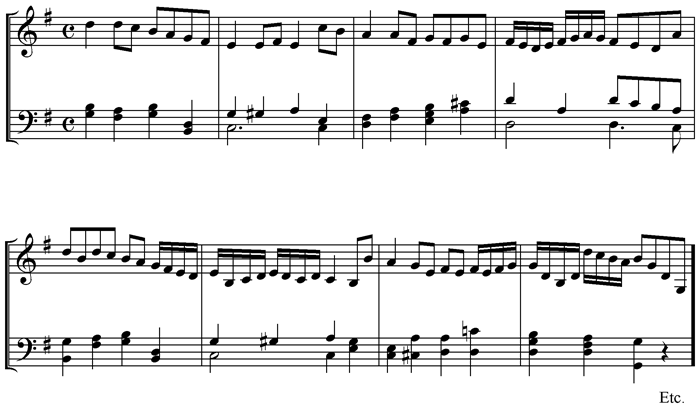
[Listen]
(c.) An English 'Haye,' or 'Raye,' or 'Round,' date 1678. See p. 131, L.L.L. V, i, 148.
For a French 'Haye,' see Note on Arbeau's Orchésographie. Tune only given [see Stainer and Barrett's Dict. of Musical Terms].
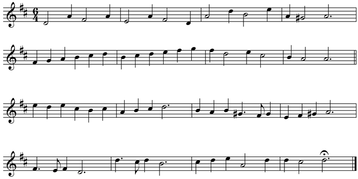
[Listen]
It will be noticed that the steps of the Haye, as given in 'Orchésographie,' can be adapted to this tune. The dotted minim value of this corresponds with the semibreve value of the other.
(d.) 1. The King's Hunting Jigg, by Dr Bull (1563-1628). See p. 117. Hamlet II, ii, 504, etc.
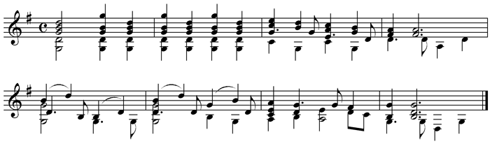
[Listen]
(d.) 2. The Cobbler's Jig. 1622. See p. 125.
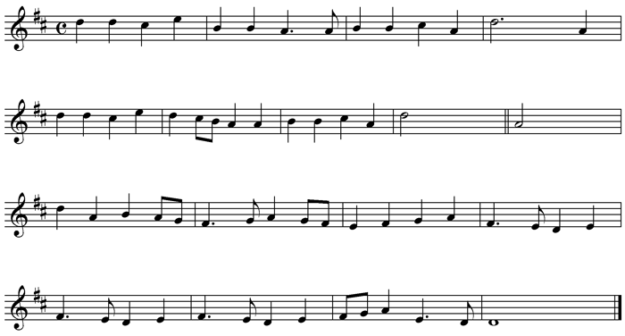
[Listen]
(e.) 1. An English Morris, 1650, see p. 132. All's Well II, ii, 20, etc.
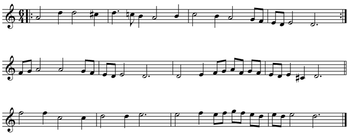
[Listen]
(e.) 2. Italian Moresca, by Claudio Monteverde, from his opera 'Orfeo,' 1608. This at all events must have had a different step to the Morisque of Arbeau. (See Note on the 'Orchésographie.')
This dance is certainly in triple rhythm, so the common-time sign probably indicates it should be played fast enough to give the effect of two beats to the bar.
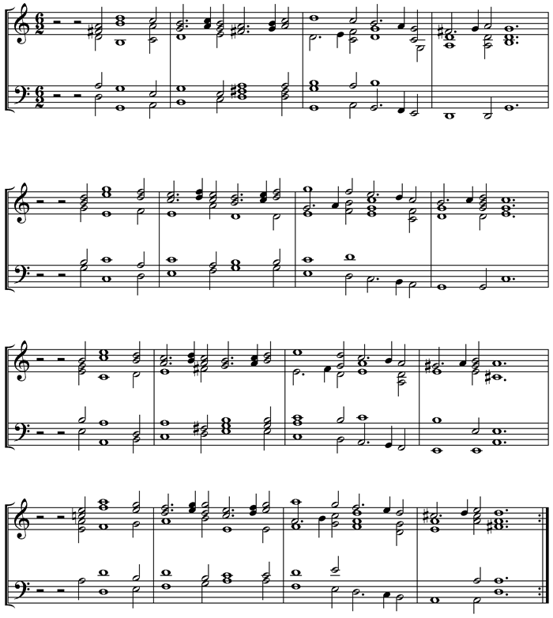
[Listen]
(f.) Part of 'My Ladye Carey's Dumpe,' circa 1600. See p. 127. Two Gent. III, ii, 83, etc.
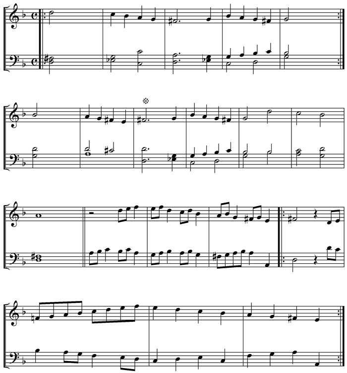
[Listen]
Then return to . This is about one third of it. The last strain of all is the first here printed, but in four parts, and with extraordinary harmony, the E's being carefully marked ♮.
N.B.—For Cinquepace, Canaries, Brawl, Lavolt, Courante, Haye, Morisque, see the Note on 'Orchésographie.'
27. Musical Stage Directions. See p. 165, and ff.
(a.) Flourish, believed to be of Charles II.'s time. See p. 167.
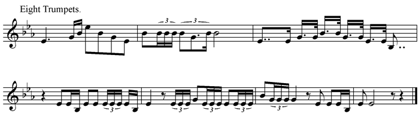
[Listen]
(b.) The Ancient English Drum March, revived in 1610. See p. 172. H. 6. A. III, iii, 30.
THE VOLUNTARY.
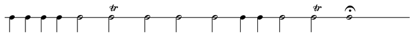
[Listen]
THE MARCH.
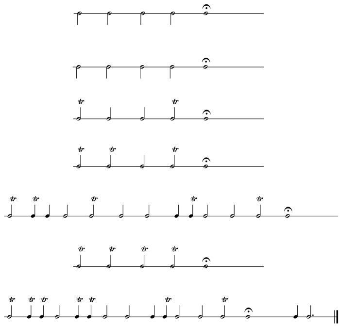
[Listen]
(c.) Military March of the French 'Gardes de la Marine,' written by Lully, 1670. For Hautboys in four parts. See p. 172. Cf. H. 6. A. III, iii, 33.
Batterie de Tambour.
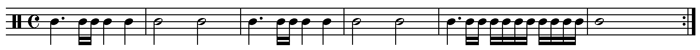
[Listen]
Air des Hautbois.
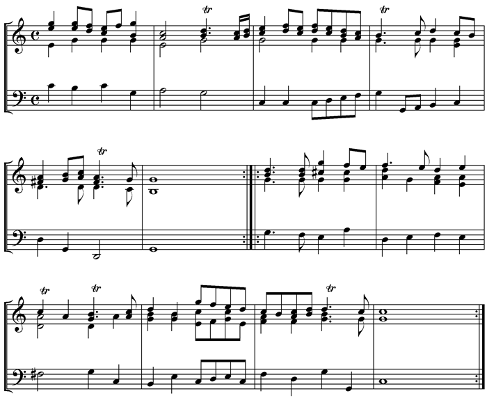
[Listen]
(d.) A 'sonnerie' of French Cavalry, 1636 (Louis XIII.). See p. 178. I connect this with 'sennet.'
Boute-selle (i.e., 'to horse').
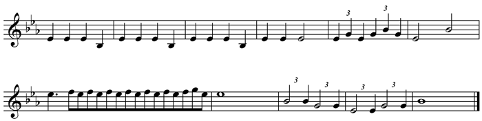
[Listen]
(e.) Tucket, p. 180. H. 5. IV, ii, 35.
1. An Italian Tucket, date 1638.
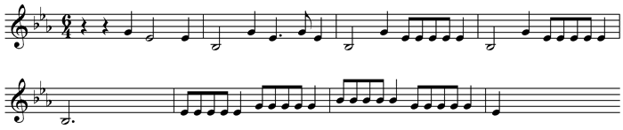
[Listen]
2. French Tucket, 1643.
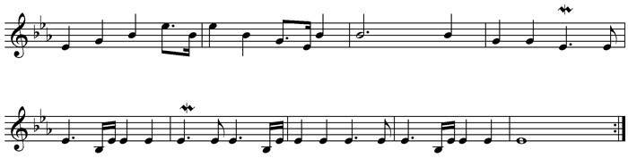
[Listen]
(f.) 1. Old French hunting fanfare. Perhaps may be connected with 'Horns wind a Peal.' Titus II, ii, 10. See p. 183.
Four Horns.
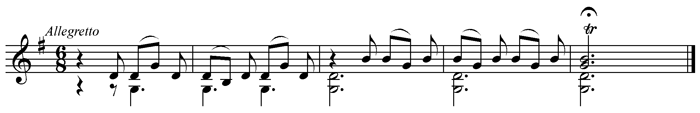
[Listen]
(f.) 2. The imitation (by violins) of a hunting call in Purcell's 'Dido and Æneas,' 1675. See p. 183.
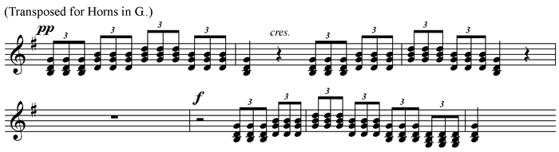
[Listen]